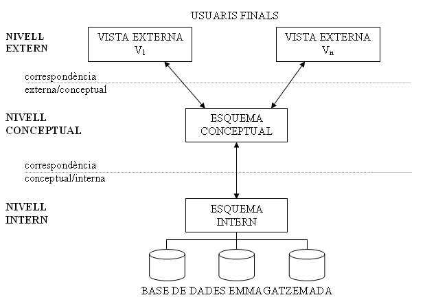
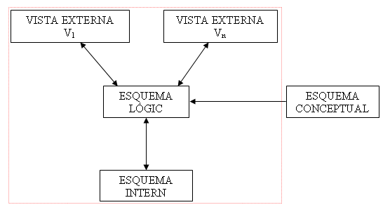

4. Arquitectura a 3 nivells
Per a estandarditzar l'arquitectura dels SGBD, el comitè ANSI/X3/SPARC va proposar una arquitectura a 3 nivells, per assegurar algunes de les característiques que hem vist com a desitjables, en concret la de la separació entre programes i dades, les múltiples vistes i la utilització d'un catàleg per a la descripció de la B.D. Aquest són els 3 nivells:

-
Al NIVELL INTERN o FÍSIC hi ha un esquema intern que descriu l'estructura física d'emmagatzematge de la B.D. S'utilitza un model físic, i descriu tots els detalls per al seu emmagatzematge (on estan els fitxers, quants, estratègies d'accés a les dades, ...).
-
Al NIVELL CONCEPTUAL o LÒGIC hi ha un esquema conceptual , que descriu l'estructura de tota la B.D. per al conjunt dels usuaris. Oculta els detalls de les estructures físiques d'emmagatzematge. S'utilitza un model de dades conceptual o d'implementació
-
Al NIVELL EXTERN o DE VISTES s'inclouen diversos esquemes externs o vistes d'usuari. Cada esquema extern descriu la part de la B.D. que interessa a un grup d'usuaris determinat, i oculta la resta de la B.D. S'utilitza també un model conceptual o d'implementació.
Per tant els tres esquemes són distintes maneres de descriure les dades, encara que aquestes només existeixen realment en el nivell físic. Però l'esquema intern ha de ser totalment transparent als usuaris, i ells han de "veure" el seu esquema extern. Qualsevol referència a aquest esquema s'haurà de traduir, per part del SGBD, a referències a les dades oportunes de l'esquema lògic. I posteriorment s'haurà de traduir en una sol·licitud a l'esquema físic. Per exemple, suposem una vista on tenim el nom i l'edat dels empleats. Una sol·licitud de tota la vista externa s'haurà de traduir en una sol·licitud de les dades correctes de l'esquema lògic, el nom i la data de naixement. I per la seua banda s'haurà de traduir en una sol·licitud a l'esquema físic, on se sabran on estan exactament les dades, si hi ha índex per fer més ràpid l'accés, ... Posteriorment quan ja estan les dades, s'hauran de passar al nivell superior, i després de fer el càlcul oportú passar-les al nivell extern.
El procés de transformar sol·licituds i resultats d'un nivell a un altre s'anomena correspondència o transformació (mapping). Evidentment consumiran temps, però facilitaran el que es pretenia:
-
Independència lògica respecte a les dades : es pot modificar l'esquema lògic sense haver de modificar els esquemes externs. Per exemple, en l'esquema lògic puc incorporar un camp per als empleats que siga la data d'ingrés en l'empresa. Això no afectarà per a res a la vista externa d'empleats i edats.
-
Independència física respecte a les dades : es pot modificar l'esquema físic sense haver de modificar l'esquema lògic, i molt menys els esquemes externs. Així per exemple es pot afegir més espai per a la B.D. incorporant un nou fitxer on es guardaran les coses (Oracle), o s'inclou un nou índex per accedir més ràpidament a les dades per un determinat ordre.
També hem de dir que no sempre els SGBD comercials compleixen estrictament aquestos 3 nivells en la seua arquitectura. Sobretot en els més menuts, ja que obligatòriament la correspondència entre els nivells tarda temps, i retarda els resultats.
Anem a ampliar l'anterior arquitectura a tres nivells per incorporar tot el procés que farem en la construcció d'una B.D.

On hem incorporat, fora de l'arquitectura a 3 nivells, és a dir fora del SGBD, l'esquema conceptual, que seria la concepció de la B.D. en un model d'alt nivell com el Model E/R. A partir d'ell realitzaríem l'esquema lògic (amb un model d'implantació). Després ja es passaria a l'esquema intern, i també als esquemes externs.
Llicenciat sota la Llicència Creative Commons Reconeixement NoComercial CompartirIgual 3.0